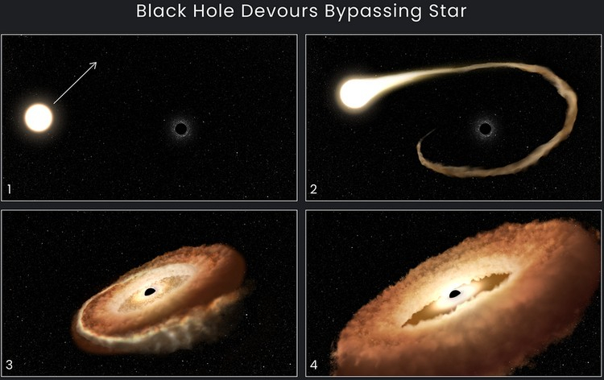

космический пончик
14 января 2023
«Хаббл» запечатлел, как чёрная дыра превратила звезду в «космический пончик»

Запощено в пончики
хитровыебанная
29 декабря 2022

Запощено в сэкс
календарь на 2023 год
29 декабря 2022
Запощено в бабы
картофельные ёбла
10 декабря 2022
🙂

Запощено в пончики
велик урал
25 ноября 2022

Запощено в бабы
не поэт
25 ноября 2022

Запощено в сэкс
уравнение с тремя неизвестными
5 ноября 2022

Запощено в сэкс
шарики для мышки
17 сентября 2022
За шариками надо следить постоянно, иногда их вынимают и уносят. Не знаю зачем, но в те времена такая проблема была, и админ при уходе клиента обязательно переворачивал мышь.
Ну для этого их и прячут в попку, но появилась другая проблема, сфинктер в время пукания разжимается и все соседи слышат как эти шарики по полу катаются
Запощено в цитаты
жёлтые тюльпаны
26 августа 2022
Запощено в сэкс
скуби ду
24 июля 2022

Запощено в бабы